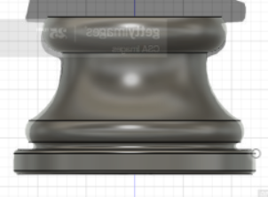
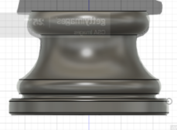
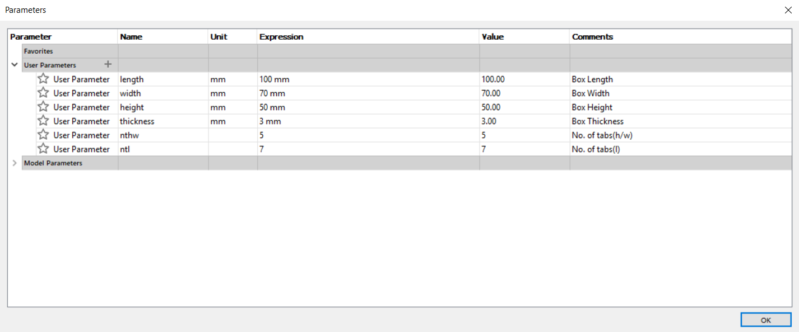
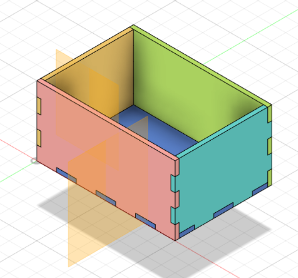

2. Using Rectangles, Lines,
Circle & Dimensions,
recreate the sketch as shown
3. Extrude the sketch

Fusion 360 is an Integrated CAD, CAM, and CAE software. You can consolidate your product development process.
Unify design, engineering, electronics, and manufacturing into a single platform.
As it is from the AutoDesk family, you will find the command structure similar to AutoCAD or Inventor.
With the rate of uptake and the direction provided by AutoDesk,
Fusion 360 will slowly replace the other AutoDesk software.
Fusion 360 is provided free for educational use, provided you sign up (using your email) as a registered student of Singapore Polytechnic.
Fusion 360 is easy to learn and master with lots of online tutorials, Youtube videos and references even from Autodesk itself.
We will use Fusion 360 for most of our design work in this module.
|
1. Go to Top view and create sketch. 2. Using Rectangles, Lines, Circle & Dimensions, recreate the sketch as shown 3. Extrude the sketch |
|
Tutorial Video for Exercise 2
Finished Products (.f3d):
1. The entire keytag should not exceed 30mm X 70mm, otherwise it will not fit into your pocket.
2. The key ring hole must have a diameter of at least 2.5 mm with neck width of at least 3.5 mm for strength, otherwise it will break when the metal keyring is inserted.
3. Do not make the keytag thicker than 4 mm.
1. Create a new design file, save it.
2. Create a new component and begin sketching on the X-Y plane.
3. Start at the ORIGIN, draw the outline of the keytag using a rectangle.
4. Draw 2 circles to round off the rectangle.
5. Add the ring for the keyring on one of the ends.
6. Add an offset of 2 mm for the rim of the keytag.
7. Add your name, initials or identifying marks.
8. Extrude the keytag to different thicknesses, you may want to experiment with this to get a good effect.
9. Render/color your keytag.
10. Save and export the keytag design.
Here's my finished product: Keychain
With the knowledge from above & some exploration,
build your own Fidget Spinner
Here's mine for reference: Fidget Spinner
|
1. Get a Canvas |
 

|
|
4. Trace the profile of the knight piece |


|
End Product (.f3d): Knight Piece
- Set the Z-axis pointing upwards, this is done in the preferences section.
- Create, name and save your file at the beginning. Fusion 360 will save your file every 5/10
minutes after that and it provides a backup. Also if you conciously save your file,
you can add a comment which allows for versioning.
- Start all sketches from the origin. Reference all other sketches from this point.
It provides an anchor point for your work.
- Constraint your sketches (tools are in the ribbon bar). This locks your sketches down
and prevents errors which you cannot see.
- Dimension your lines. This is similar to constraining your sketches.
It prevents you from errornously.
- Fusion 360 allows the definition of parameters. The parameters act as variables and allow
change after assignment. For example, if you initially designed an object with 3mm wood/acrylic
and decide to change it to 5mm, you won’t have to redraw your work, if you had defined your
design using a parameter for thickness.
- Most of Fusion 360 dimensioning can be replaced with a function. A function can be:
-> a value (fixed), you can change it in the sketch, but you have to chave every instance of it.
-> user parameter/variable. You define it in the Modify > Change Parameters menu.
You need to define:
1. Name - identifies the variable/parameter
2. Unit - No units, or a form of measurement (e.g. mm, in, ft)
3. Expression - how it is calculated, a value or function
4. Comment - some text which explains its use.
-> another dimension - you can click on another dimension to
make the parameter take on the same value.
-> a function - you can write a function using constants,
variables and mathematical operators
Always check that your parameters or items which are dimensioned with parameters
are locked on a fixed position or point, otherwise your drawing
would look strange if you change one of the parameters.
Here are my parameters and parametric box: 


{kind=link}
{kind=link}
{kind=link}
{kind=link}
{kind=link}
{kind=link}